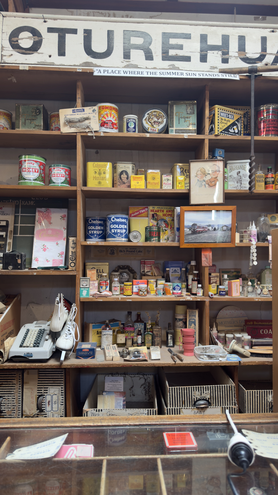
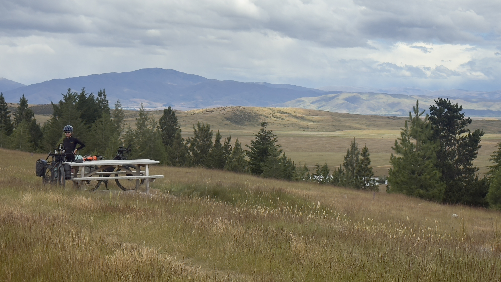

The Sounds to Sounds journey is becoming increasingly popular in New Zealand. You start at the top of the South Island in the Marlborough Sounds and make your way to the bottom of the South Island, finishing in Fiordland. We opted to finish in Deep Cove, Doubtful Sound. The journey is about 1500 km and in our case took just over two weeks.
We started this trip with doubts but finished with delight. With this bike packing route you travel through backcountry via less travelled roads, single track, and the great cycle ways.

At times it's challenging. There are some big passes to get across. But the dividends far exceed the effort. Without doubt the scenery is spectacular. You get to experience what many do not.
“We started this trip with doubts but finished with delight. The dividends far exceed the effort.”

Someone warned us that when we finished, we wouldn't want to stop. They were right. We loved it. And we yearn for such adventure again.
This is written not to provide advice on bike choice or routes to follow. It's a simpler message. As clichéd as it sounds, if you ever have the slightest opportunity to do it — just do it.